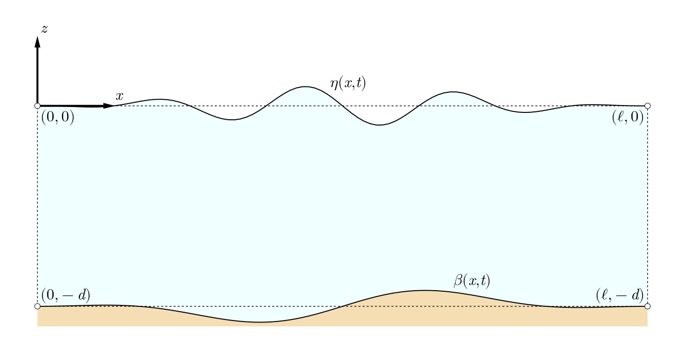

SpectralWaves.jl
A Fourier Galerkin method solution to nonlinear waves propagating over topography.
Overview
SpectralWaves.jl is a Julia package for simulation of nonlinear waves propagating over arbitrary topography under potential flow assumptions. The solution is derived using a Fourier Galerkin spectral method in terms of amplitudes of free-surface elevation and velocity potential, while inverse Fourier transform is used to get a phase-resolved wave field. Four wave generation mechanisms are supported - initial conditions, linear wavemaker forcing, pressure forcing (to be implemented), moving bottom.
Wave problem
We consider waves propagating over arbitrary bottom topography in a periodic fluid domain of length $\ell$ and characteristic depth $d$ (corresponding to still water level). A Cartesian coordinate system is used to define fluid elements along horizontal $x$-axis coinciding with undisturbed free surface and upward-pointing and vertical $z$-axis. Undulating free surface is described by means of $\eta(x, t)$, while bottom topography is considered as fluctuations $\beta(x, t)$ around $-d$. The general scheme is presented in figure 1 below.
Figure 1: Propagation of waves over topography in a periodic fluid domain.
According to potential flow assumptions (irrotational flow of an inviscid and incompressible fluid), we define velocity vector field $\mathbf{v}(x, z, t) = \nabla\Phi(x, z, t)$ and formulate a our boundary-value problem in a following way (table 1)
Table 1: Initial boundary-value problem of waves propagating over topography.
| Equation | Region | Description |
|---|---|---|
| $\frac{\partial^2\Phi}{\partial x^2} + \frac{\partial^2\Phi}{\partial z^2} = 0$ | $-d + \beta \leq z \leq \eta$ | Laplace's equation |
| $\frac{\partial\eta}{\partial t} + \frac{\partial\eta}{\partial x}\frac{\partial\Phi}{\partial x} - \frac{\partial\Phi}{\partial z} = 0$ | $z = \eta$ | Kinematic free-surface boundary condition |
| $\frac{\partial\Phi}{\partial t} + g\eta + \frac{1}{2}\left(u^2 + w^2 \right) = 0$ | $z = \eta$ | Dynamic free-surface boundary condition |
| $\frac{\partial\beta}{\partial t} + \frac{\partial\beta}{\partial x}\frac{\partial\Phi}{\partial x} - \frac{\partial\Phi}{\partial z} = 0$ | $z = \beta - d$ | Kinematic bottom boundary condition |
| $\Phi(x + \ell, z, t) = \Phi(x, z, t)$ | $x = 0, \ell$ | Periodic lateral boundary condition |
where $u = \partial\Phi / \partial x$ and $w = \partial\Phi / \partial z$ are horizontal and vertical velocity components, respectively, while a gravitational acceleration $g\approx 9.81\,\mathrm{m/s}^2$.
Below, we provide a description of the spectral solution to the problem of waves propagating over topography. Anxious users may skip this part and go directly to our guide.
Spectral solution
Fourier series expansions
We use spectral expansions of $\Phi$, $\eta$, and $\beta$, while additionally $\Phi$ is decomposed into parts: $\phi$ - satisfying homogeneous problem of waves propagating over horizontal bottom and $\psi$ - satisfying a corrugated bottom correction. The total velocity potential $\Phi$ satisfies Laplace equation. In Table 2, we provide spectral expansion formulas of $\Phi$, $\phi$, $\psi$, $\eta$, and $\beta$ along with velocity components $u$ and $w$.
Table 2: Spectral expansion formulas.
| Equation | Description |
|---|---|
| $\Phi(x, z, t) = \phi(x, z, t) + \psi(x, z, t)$ | Total velocity potential |
| $\phi(x, z, t) = \sum_{i=-I}^{I} \hat{\phi}_i(t)\frac{\cosh\kappa_i(z+d)}{\cosh\kappa_id}\mathrm{e}^{\mathrm{i}\kappa_ix}$ | Flat-bottom velocity potential |
| $\psi(x,z,t) = \hat{\psi_0}(t)z + \sum_{i=-I\,\wedge\,i\ne0}^{I}\hat{\psi}_i(t)\frac{\sinh\kappa_iz}{\kappa_i\cosh\kappa_id}\mathrm{e}^{\mathrm{i}\kappa_ix}$ | Corrugated bottom velocity potential |
| $\eta(x, t) = \sum_{i=-I}^{I}\hat{\eta}_i(t)\mathrm{e}^{\mathrm{i}\kappa_ix}$ | Free-surface elevation |
| $\beta(x, t) = \sum_{i=-I}^{I}\hat{\beta}_i(t)\mathrm{e}^{\mathrm{i}\kappa_ix}$ | Bottom topography |
| $u(x, z, t) = \sum_{i=-I\,\wedge\,i\ne0}^{I}\mathrm{i}\frac{\hat{\phi}_i(t)\kappa_i\cosh\kappa_i(z+d) + \hat{\psi}_i(t)\sinh\kappa_iz}{\cosh\kappa_id}\mathrm{e}^{\mathrm{i}\kappa_ix}$ | Horizontal velocity component |
| $w(x, z, t) = \hat{\psi_0}(t)+ \sum_{i=-I\,\wedge\,i\ne0}^{I}\frac{\hat{\phi}_i(t)\kappa_i\sinh\kappa_i(z+d) + \hat{\psi}_i(t)\cosh\kappa_iz}{\cosh\kappa_id}\mathrm{e}^{\mathrm{i}\kappa_ix}$ | Vertical velocity component |
where $\kappa_i=i2\pi/\ell$ are solution eigenvalues corresponding to $I$ individual wave harmonics; the primed sum refers to omitting non-oscillatory eigenvalue $\kappa_0=0$. $\mathrm{i}^2=-1$, while the hat accent $\,\hat{}\,$ denotes solution amplitudes. We also use tilde $\,\tilde{}\,$ and dot $\,\dot{}\,$ accents to highlight amplitudes corresponding to time and horizontal gradients.
Taylor series expansions
The solution to the wave problem is achieved by introducing Fourier series expansions presented in table 2 to Taylor series expansions of boundary conditions presented in table 1. As a result, we get two evolution equations of free-surface elevation and velocity potential (from the kinematic and dynamic free-surface boundary conditions) and a set of linear equations (SLE) relating velocity potential coefficients of a homogeneous flat-bottom and corrugated problem (from the bottom boundary condition). In table 3, we provide implementation-ready forms of the solution equations.
Table 3: Implementation-ready forms of the solution equations.
| Equation | Description |
|---|---|
| $\dot{\eta}_i = \kappa_i\hat{\phi}_i\mathcal{T}_i + \hat{\psi}_i\mathcal{S} - \delta\dot{\eta}_i$ | Evolution equation for free-surface elevation |
| $\dot{\phi}_i = -g\hat{\eta}_i - \delta\dot{\phi}_i$ | Evolution equation for velocity potential |
| $\left(\mathbf{I}-\sum_{m=0}^{M_{\psi}-1}\left(\mathbf{\tilde{B}}_m\odot\left(\mathbf{\tilde{\Psi}_m^\prime\otimes\mathbf{1}}\right)-\mathbf{\hat{B}}_m\odot\left(\mathbf{\hat{\Psi}_{m+1}^\prime\otimes\mathbf{1}}\right)\right)\right)\cdot\mathbf{\hat{\psi}}=\mathbf{\dot{\beta}} + \sum_{m=0}^{M_{\psi}-1}\left(\mathbf{\tilde{B}}_m\odot\left(\mathbf{\tilde{\Psi}_m^{\prime\prime}\otimes\mathbf{1}}\right)-\mathbf{\hat{B}}_m\odot\left(\mathbf{\hat{\Psi}_{m+1}^{\prime\prime}\otimes\mathbf{1}}\right)\right)\cdot\mathbf{\hat{\phi}}$ | System of linear equations relating bottom and flat-bed velocity potential coefficients |
where
| $\mathcal{T}_i$ | $= \tanh\kappa_id$ |
| $\mathcal{S}_i$ | $= \mathrm{sech}\kappa_id$ |
| $\delta\dot{\eta}_i$ | $= \sum_{m=0}^{M_{\phi}-1}\left(\frac{\mathbf{\hat{\eta}}^{*m}}{m!}*\left(\mathbf{\tilde{\eta}}*\mathbf{\tilde{\Phi}}_m-\frac{1}{m+1}\mathbf{\hat{\eta}}*\mathbf{\hat{\Phi}}_{m+1}\right)\right)_i$ |
| $\delta\dot{\phi}_i$ | $= \sum_{m=0}^{M_{\phi}-1}\left(\frac{\mathbf{\hat{\eta}}^{*m}}{m!}*\left(\frac{1}{m+1}\mathbf{\hat{\eta}}*\mathbf{\dot{\Phi}}_{m+1}+\frac{1}{2}\sum_{n=0}^{m}\binom{m}{n}\left(\mathbf{\tilde{\Phi}}_n*\mathbf{\tilde{\Phi}}_{m-n}+\mathbf{\hat{\Phi}}_n*\mathbf{\hat{\Phi}}_{m-n}\right)\right)\right)_i$ |
| $\tilde{\eta}_i$ | $= \mathrm{i}\kappa_i\hat{\eta}$ |
| $\dot{\Phi}_{im}$ | $= \kappa_i^m\dot{\phi}_i(2\mid m) + (\kappa_i^m\dot{\phi}_i\mathcal{T}_i + \kappa_i^{m-1}\dot{\psi}_i\mathcal{S}_i)(2\nmid m)$ |
| $\hat{\Phi}_{im}$ | $= (\kappa_i^{m+1}\hat{\phi}_i\mathcal{T}_i + \kappa_i^m\hat{\psi}_i\mathcal{S}_i)(2\mid m) + \kappa_i^{m+1}\hat{\phi}_i(2\nmid m)$ |
| $\tilde{\Phi}_{im}$ | $= \mathrm{i}\kappa_i^{m+1}\hat{\phi}_i(2\mid m) + \mathrm{i}(\kappa_i^{m+1}\hat{\phi}_i\mathcal{T}_i + \kappa_i^m\hat{\psi}_i\mathcal{S}_i)(2\nmid m)$ |
| $\hat{\Psi}_{i,}$ | $= \kappa_i^m\hat{\psi}_i(2\mid m) + (\kappa_i^{m+1}\hat{\phi}_i\mathcal{S}_i - \kappa_i^m\hat{\psi}_i\mathcal{T}_i)(2\nmid m)$ |
| $\tilde{\Psi}_{i,}$ | $= \mathrm{i}(\kappa_i^{m+1}\hat{\phi}_i\mathcal{S}_i - \kappa_i^m\hat{\psi}_i\mathcal{T}_i)(2\mid m) + \mathrm{i}\kappa_i^m\hat{\psi}_i(2\nmid m)$ |
| $\mathbf{\tilde{B}}_{ijm}$ | $= \left(\frac{\mathbf{\hat{\beta}}^{*m}*\mathbf{\tilde{\beta}}}{m!}\right)_{i-j}$ |
| $\mathbf{\hat{B}}_{ijm}$ | $= \left(\frac{\mathbf{\hat{\beta}}^{*(m+1)}}{(m+1)!}\right)_{i-j}$ |
| $\hat{\Psi}_{im}^{\prime}$ | $= \kappa_i^m(2\mid m) - \kappa_i^m\mathcal{T}_i(2\nmid m)$ |
| $\hat{\Psi}_{im}^{\prime\prime}$ | $= \kappa_i^{m+1}\mathcal{S}_i(2\nmid m)$ |
| $\tilde{\Psi}_{im}^{\prime}$ | $= - \mathrm{i}\kappa_i^m\mathcal{T}_i(2\mid m) + \mathrm{i}\kappa_i^m(2\nmid m)$ |
| $\tilde{\Psi}_{im}^{\prime}$ | $= \mathrm{i}\kappa_i^{m+1}\mathcal{S}_i(2\mid m)$ |
Numerics
Provided that initial conditions with respect to $\mathbf{\hat{\phi}}$, $\mathbf{\dot{\phi}}$, $\mathbf{\hat{\psi}}$, $\mathbf{\dot{\psi}}$, $\mathbf{\hat{\eta}}$, $\mathbf{\dot{\eta}}$ are known and the bottom and its evolution is prescribed in terms of $\mathbf{\hat{\beta}}$ and $\mathbf{\dot{\beta}}$, respectively, we apply time-stepping procedure to get the solution. It is based on iterative application of evolution equations and solving the system of linear equations at each time step until a desired accuracy is reached.
An Adams-Bashforth-Moulton time-stepping method is chosen and is used according to Last Point Approximation scheme, where the predictor is applied to the velocity potential amplitudes and the corrector to the free-surface elevation amplitudes. Below the simplest formulas of $\mathcal{O}(1)$ are provided
| $\hat{\phi}_i(t+\Delta t) = \hat{\phi}_i(t) + \Delta t\dot{\phi}_i(t)$ | AB predictor $\mathcal{O}(1)$ |
| $\hat{\eta}_i(t+\Delta t) = \hat{\eta}_i(t) + \Delta t\dot{\eta}_i(t + \Delta t)$ | AM corrector $\mathcal{O}(1)$ |
In between predictor and corrector evaluations and at each iteration, a system of linear equations matching $\hat{\phi}_i$ and $\hat{\psi}_i$ coefficients is solved. In case of static bottom topography, an initial factorization of SLE coefficients matrix is employed for efficiency.